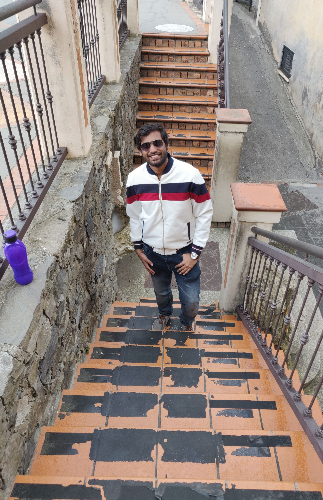
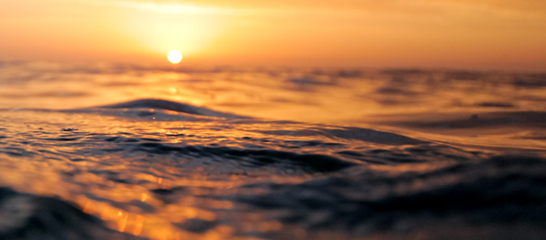
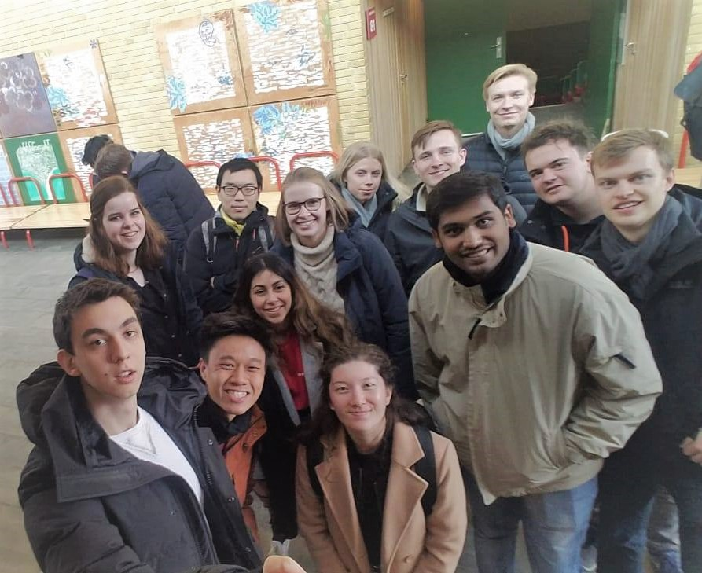
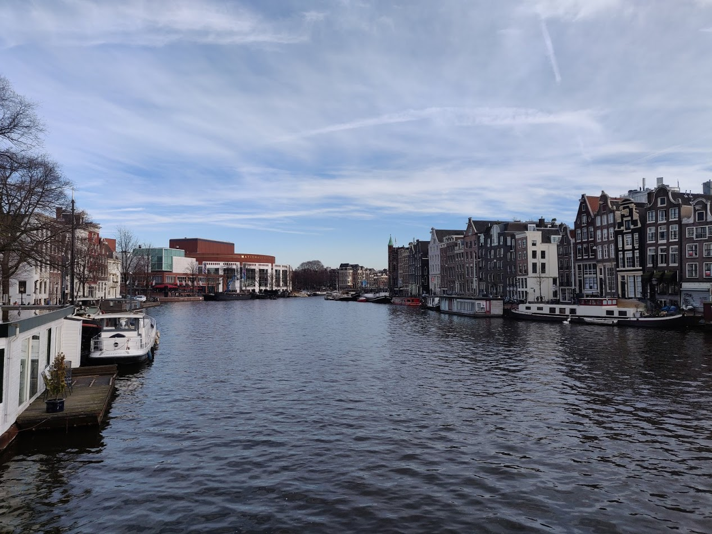
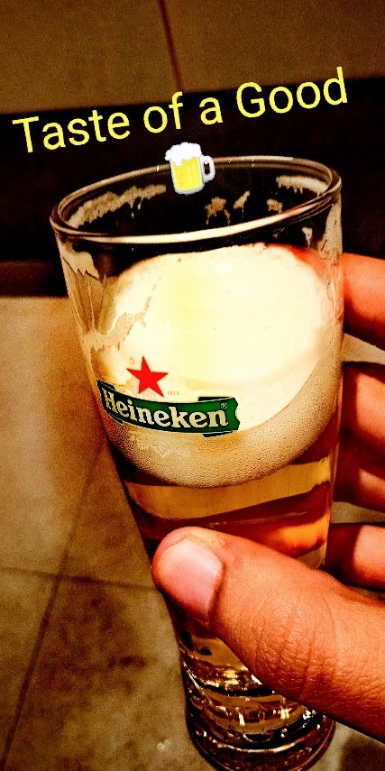
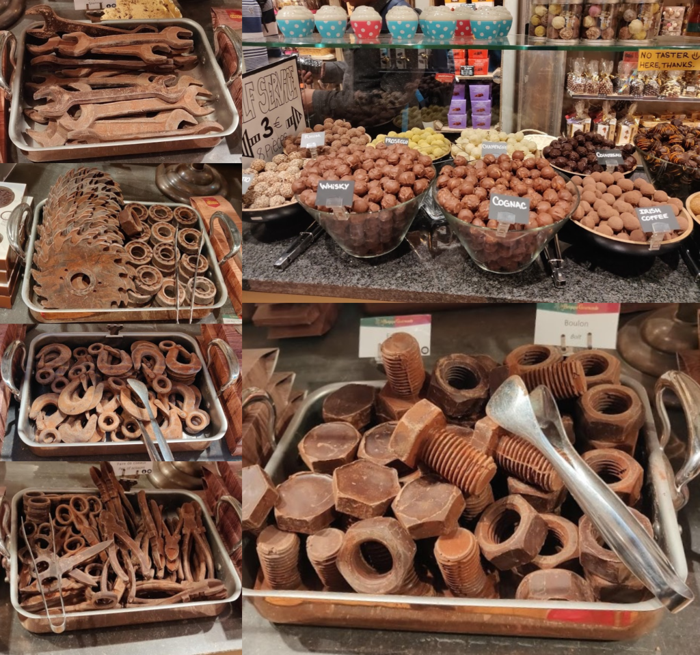
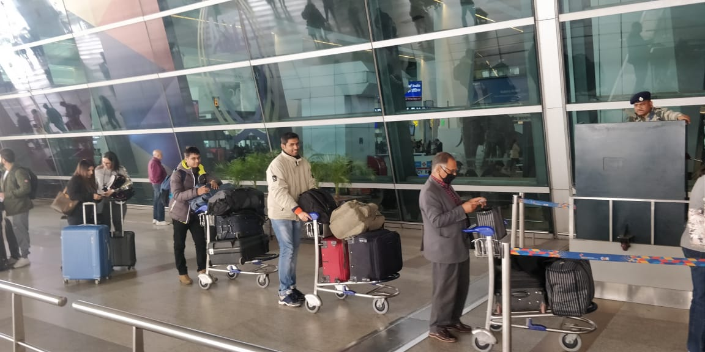
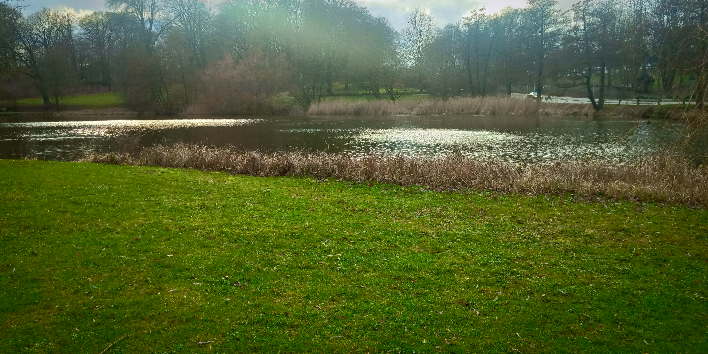
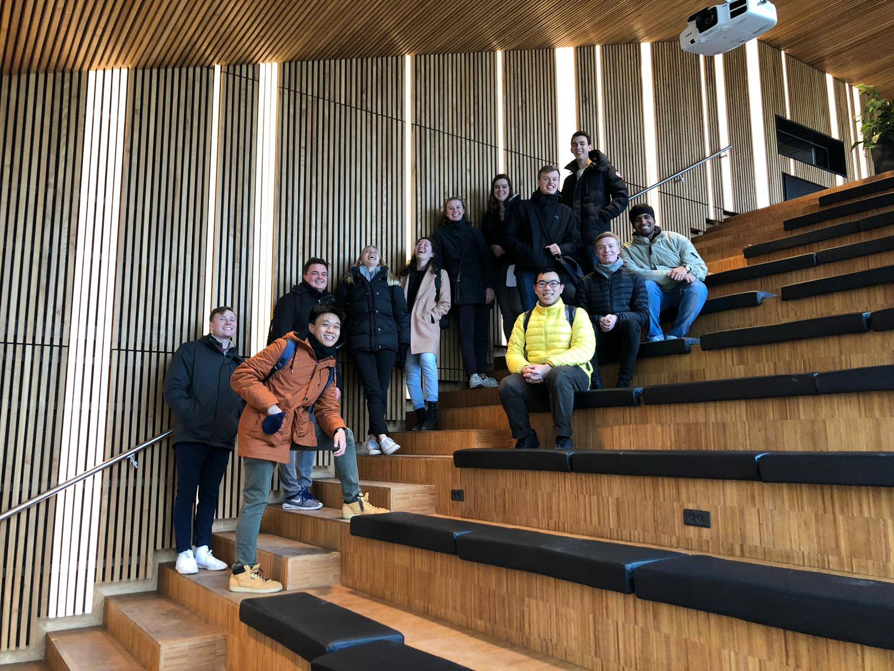
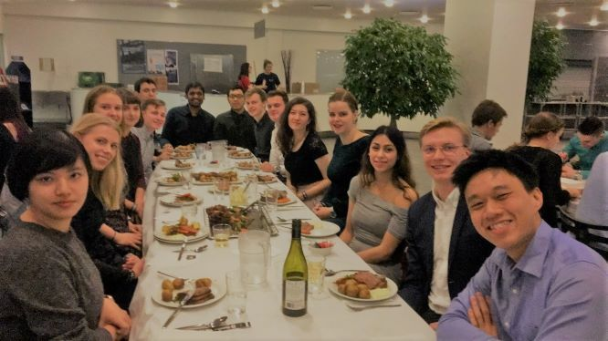

It does not do to dwell on dreams and forget to live.
This Blog series is about my wonderful 6 months adventure of being an exchange student and covers my thoughts and experiences from the beginning to the very last goodbyes to Denmark
The Upcoming Blogs aims to make students aware about what a wonderful opportunity Semester Exchange is. It includes my own experience in Denmark and has some general tips to live abroad. Its partly a travel Blog too i.e
I will be writing about my trips around europe. I also aim to write down my wonderful memories of exchange so that they do not fade with time and become immortal on the internet. This is my first time writing a blog,
So i would really appreciate any suggestions that you might have.
About Me

Yep that's me, Harsh Maheshwari, from a small town named Gondia in Maharashtra, India. I am currently in my 2nd year of Bachelors in Chemical Engineering at Indian Institute of Technology, Mumbai. I love. Vegetarian
Food , I am big fan of Harry Potter series and Dragon Ball series.
This Blog is inspired by my Brothers and Friends in India. I am super excited to share my experience, thoughts, travels and some tips about exchange. I hope you as reader will like and enjoy my writing.
Never be afraid of trying something new it’s always for you to know yourself better than ever before
College is all about meeting people from different backgrounds, cultures and interests, developing skills that are important to you as a person, asking yourself the right questions about life and of course the most memorable
years with your friends. But when in college one should really introspect deeply that from all these pointers how many are truly happening around you. First year college is really filled with so much to learn about
life and about oneself because so much changes. For most the thought of living a completely independent life is super exciting and addictive but some also feel the change to be difficult and scary at times. Semester
after Semester we learn something new, make new memories and grow wiser. From all the opportunities in a college the experience of an exchange semester to a college in some corner of the world seems most intriguing
to me. Yes, this blog series is about my personal experiences from 4th Semester of my bachelors at Danmarks Tekniske Universitet (Technical University of Denmark, DTU).
People generally ask how to choose a college for exchange. It’s not really that hard to choose, let me tell you my story. It all began in 3rd semester when I found about semester exchange opportunities provided by IIT Bombay.
Pondering over the thought of colleges I asked a few people around and one of my seniors told me to think about why SemEx (Semester Exchange). So basically everything comes under this single question.
Getting the right Answers
So why SemEx ?, for me it was travelling, study abroad, Chemical engineering aspects of the institute and country and last but most important factor Course Mapping and MoU between the institutes of IIT Bombay and DTU. So,
now with Denmark known for its Dairy and Chemical Industries which aligned with my degree interests, with DTU’s easy course mapping and with a cream topping of Europe tourism was the perfect option for me. Some other
important aspects to think about are languages in which the university offers courses, cost and scholarships involved, timeline of the semester in both universities and your own personal future plans like internships
or a position in institute politics etc.
Meeting new people is just Great
Now deciding it all in my head was the easy part, but next comes the hard part, preparation for moving to a new country for half a year, making travel plans, collecting all the necessary documents. As time marched forward
the excitement increased with an additional component of anxiety and thoughts in the head were jumping from one idea to other.
Thanks for joining me in this beautiful Journey. Good company in a journey makes the way seem shorter.

29 January 19:00, I was with my friends Aashish, Piyush and Vidit. Waiting outside the Nørreport station with all our luggage for a taxi, we were appreciating the city at its first look. The city at its first sight is marvellous
and really rich in colours. All of us certainly felt the chill of the city and our taxi arrived. The first week at was all planned up by Denmark Technical University (DTU) itself. All of us had signed up for the introductory
week which i truly am glad we did.
Next Morning was bit early, due to jet-lag we woke up at around 4 am and it was still dark outside but we got up excited for the day ahead. After we reached DTU we reached and found our Buddy Groups, literally the best
thing about the whole introductory week. I met many different exchange students from my buddy group as well as from other groups. It was really a fun week. we participated in competition like scavenger hunts , It really
was a long tour all around the college. Next day we had a tour around the city Copenhagen with our buddy groups and the mentor showed us many beautiful places in the city. we had a splendid dinner and an after party
which was a total blast. Meeting new people is always exciting , knowing about their cultures , routines and their ways is few of many reasons that i would suggest someone for a semester exchange.

Meeting new people is just Great
The long time for which i have been in Denmark i have found that Danes are the nicest, happiest, systematic and the most eco-friendly people. Copenhagen is certainly one of the most socially, economically and technologically
advanced cities in the world. There is no doubt why Copenhagen is considered the number one city to travel in the world. Nyhvan with colourful blocks of buildings and the crazy cold wind is a love at first site.
the cruise tour along the harbour is a must do thing.
It was another of many Friday nights and with Aashish and Piyush , I left for the main city and we reached the A-Bar (Australian Bar) around 23:30 and just after a few minutes in, we were dancing with this danish fellow
who seemed nice and he was enjoying the music with us. Eventually we ended up meeting his whole group. We enjoyed the rest of the night at the club with these guys and the party lasted till 6:00 am, we hadn't really
planned to stay such a long time but music and people were just awesome,to dance, to talk, to make friends with. we made many friends that night and exhausted ourselves beyond our limits.
When you travel your thinking changes. You look at the world differently. Your willingness to take chances, your ability to put yourself out there, it all changes.

Reaching Amsterdam is easy enough from Copenhagen just take an overnight bus to Amsterdam and in 12 hours you are in the wonderland of the Netherlands. Really a refreshing cool place beautiful in every direction filled
with the wind of excitement and enjoyment. Most of the tourist places are in the central region of the city. Some of my personal favourites sites to be in Amsterdam are : 1) Adams Tower Lookout 2) The Amsterdam
Dungeon 3) Madame Tussauds 4) The Heineken Experience 5) Anne Frank House 6) Museum Square 7) Red Light District and Secrets 8) Canal Cruise
A`DAMS LOOKOUT
First place in the list was Adams Lookout here we found the best view of the city from a height of about 135 meters. Here on the top of the tower they have beautiful cafeteria with tables located with some
of the most extravagant sights from the lookout. Also they have great telescopes in all the four direction to watch the city closely from above the tower. Travelling around the city on an open ferry is something you should really not miss. Some of the most beautiful pictures you can take are from the ferry itself. You can either take a canal cruise or also try Hop on Hop off boats and bus Then Learn about
one of oldest beer manufacturing techniques and brand at the Heineken Experience. Dive deep in the history of beers in Amsterdam. Get to know the ingredients in beer and how beer brewing is done, (By
the way 95% is just water :P). Enjoy 2 absolutely perfect Heineken beers with a visual tour of beer manufacturing process and then try to pour a pint from a tap for yourself (really fun to do).

In the night travel around the red-light district area, the colour of the area really lights up to red pink and is really beautiful to just roam around but keep your wits about you and watch out
for pickpockets. The area is loaded with coffee shops that sell everything and anything you need. If interested visit the Red-Light Secrets museum and Hash, Marijuana & Hemp Museum. Few other places worth visiting
are Vondelpark, I Amsterdam sign, Dam Square street show. Something that I really missed out is Keukenhof, a bit away from the main city it is the most spectacular floral
displays across the land filled with flowers and beautiful colours.
Fear of a name only increases fear of the thing itself.
You go to Paris, or you go to Portugal, you go to Poland, and you ask, 'Who are you people?' They'll tell you, we're Portuguese, we're Spanish, we're Polish. Who are the people that are really European? The people in Brussels,
in the E.U. bureaucracy. Europe has not been able to move to the level of patriotic identification with the concept.
Brussels the capital of Europe, there’s something for everyone in Brussels. It is the complete package of History, Languages, Cultures, Stories, Chocolates, Waffles, Beers, Nature, Hospitality and Complex Politics, so much
more. One can easily reach Brussels from Amsterdam by taking a bus. It’s really a yellowish orange city with a cute aroma of chocolates and beer. Definitely Start the trip with a free guided tour near the town hall.
The guides there are really knowledgeable and very entertaining. Here you will listen to many interesting stories about the city and get a brief tour of some important places in the city. Some places not to miss are
the City Town Hall, Manneken Pis Statue, Royal Palace of Brussels, Brussels Comic Book Museum, Brussels Park, St Michael and St Gudula Cathedral.
After the tour get something to eat in brussels try the different types of waffles and the best fries with so many different sauces to choose from. Oh man! Their fries, waffles and chocolates are to die for. Something interesting
to know is the history of fries, During the World War I American soldiers stationed in Belgium tried fries for the first time. The official language of the Belgian army then, was French. Funnily enough the soldiers
nicknamed the delicious fried potatoes as “French fries." and the name stuck, and spread in both space and time. And decades later we're still giving credit to the wrong country. Then may be go about hunting in different
chocolate stores they are kind enough to greet you with some chocolate and the varieties of chocolates you will see will just blow your mind. Ranging from bars and truffles to chocolate monument like Manneken Pis and
the instruments below in the picture. You would not have imagined chocolate could be so much more than just a energy bar.

Meeting new people is just Great
Then in the evening you should definitely hang out with your beer buddy who knows all about it because in the bar or club you will be confused by the types of beers they keep. All with their own taste and own colour. At
night you should not miss the city town hall the most asymmetrical figure in all brussels, but in night one of the most beautiful places in all brussels.
Excess baggage is a symptom of something we are missing on the inside – a fear that we won’t be accepted for what we are, as if our selves are not enough. We bring too much of our past experience, the clutter of our emotions. These things get in the way and keep us from getting close to others. Then we are left with the task of having to find someone else to carry it, whether it is our luggage or our loneliness.

Someone truly said that on a long journey even a straw weighs heavy. Packing for a six month stay in a foreign country is no joke. One really needs to pack the most important stuff only. Since it is generally a flight trip
from home country to the host country there is always a limit to the kilograms of luggage one can carry. I had my complete luggage fitted in 2 medium-large size suitcases, 1 Hiking backpack and one laptop backpack.
In this post i intend to give away all my secrets for light and easy packing.
I will distribute the post as two cases one when you are coming from the home country to denmark and Second for when you go on for tours with lengths up to a week.
Here are some general packing tips Part 1.
Pack sober and natural colours so that you can pair everything with anything. Also europeans don't dress very brightly they like white grey and black very much.
Calculate the worth of every item with questions like “When will I wear this?” “How many different outfits can I wear this with?” “Is this worth the space and weight it will take up?”
Pack perfectly for the winters because here in
denmark the winter is rather windy and cold.
Don’t bring unnecessary items which you think may not be that useful or in any case you may buy them here.
Keep accessories simple and
to a minimum. You don’t want to have to keep track of too many valuables.
Leave room for something special to make you feel at home. You’ll want it when you’ve been abroad a while and start to
miss home. For me, it was the indian food and spices.
Divide heavy items between bags. Airlines have a limit for the Kilograms one can carry. Extra or overweight baggage may cost you more money
Tip : Air India allows students to take an extra luggage of 23 kgs on a student visa
One Just Cannot Replace the Indian Food
Considering I only eat vegetarian i had to pack lots of packed food with me. Also if you really love your homeland spices than you might want to take a few packs of those (i.e if you plan on cooking :)). If you are
going to cook then you might want to bring a cooker for making rice (In Denmark they don't use cookers for anything). For non vegetarians denmark has many options but the food is pretty expensive here. So one should
think accordingly.
Here's a simple list of the items that i included in my packing
General medicines with their prescriptions Toothbrush & Toothpaste Body Wash / Soap Facewash Eye drops / Contact Solution Shampoo & Conditioner Hand / Body Lotion Handkerchief Undergarments Socks Towel Jeans
Trousers Joggers Belts Sweatshirts Shirt
Tshirt Shorts Slippers
Sports shoes Casual shoes Perfume / Deodorant Sunglasses Eye Mask Raincoat / Umbrella Water Bottle
Sweaters loose blazer Woollen cap Woollen overcoat Casual Jacket Scarf Gloves
Universal Converter / Multipin Camera Ethernet cable Trimmer Laptop Mobile Phone Power Bank Earphones Personal Diary and some Novels Photo ID / Driver’s
LicensePassport / Visa Boarding Passes (printed or electronic) Confirmation Receipts (hotel, train, bus, rental car, event tickets) Emergency Docs (health insurance card, allergy reports) Funds: Wallet,
Credit Cards, Cash
Now second part what one should take during travelling.
Here are some general packing tips Part 2.
Roll, don't fold. Pack dual-purpose garments Pack a few plastic bags with you Minimum liquid They remove it at the airport Carry Tissue papers Less and less Shoes Pack clothings with proper counting of days don't
take extra it's a burden afterwards Don't take many luxurious items You Don't want worries about the luggage during a trip Check the weather Take items you can grab at your destination off the list Keep Space for a Souvenir
[George] took out his wand, touched the parchment lightly, and said, "I solemnly swear that I am up to no good."
It was Just another day at college and fortunately the last lecture was over by 3:30 pm and did not extend to its usual 5:00 pm. So I and my friend Aashish decided that we should roam around in the city and just when we
were exploring our option on the google maps we happened to see a lake like structure. After read some reviews about the place (Mølleåen) we decided to go there. It was just a walk of 2 km from DTU.
For the good or bad i don't know but the weather that day was very windy and we could feel the direct opposition from the cold wind even when we were just walking. This cold weather made us both even more excited about
are visit to the lake thinking how great would be the weather near the lake if its so awesome in the city itself. I fired up the google direction features and we were on our way. On our way we even found a beautiful
garden. It was quit rainy green and had small water bodies inside it which i believe were connected to the lake itself. we took some beautiful pictures in the garden and enjoyed our walk through it.
Carvings in the Garden, Really Don't have any idea what it says
The Story ....
Following the directions shown by google maps we tried to cross the garden. The route became thinner and thinner as we moved ahead and the wind increasing. We were almost at the lake but what do we see, there is a high
traffic route between us and the lake. We were puzzled on how do we even cross such a route with no zebra crossings. We some how crossed the garden fence (it was very low) and we ended up on the route. Now hoping
to find a way to the lakeside. we were walking along the route and cars were rushing with a very high speed near us. Walking for a bit in search of a crossover we realised that cars were making horn sounds every
time it passed us. At that moment we came to our senses and caught up to the fact that it wasn't just a normal route but a Highway. And the terror that bestowed in Aashish was just enough for me to realise that
it was a huge mistake turning towards this route. We tried to escape the highway and back to the garden but before that could happen the cops pulled over. The First thought that came to my mind was what if
the officer doesn't understands English will he take us to the station?! One of the officer came out of the car and started firing us with all sorts of questions about who we are, were do we come from and why on
the heavenly earth were we on a highway restricted for pedestrians. We replied with humbleness and told that we were students from DTU and were trying to find a way to Mølleåen lakeside. He asked for identification
and god helped us as our CPR numbers had just come a week before. He punched our CPR numbers and was trying to find some information about us on some sort of black device. He tried to scare us with some serious
talk about how deep in trouble we were. The other officer who was inside the car said something in danish and the two officers agreed to each other. This wasn't enough that he asked us to move inside the police
car. Now we were at the back seats, siting and wondering what will happen to us next. The car itself was integrated with many sophisticated devices and the cliche black cross bars behind us and for the first time
the sound of police siren seemed daunting. He drove was for a while and after a significant distance pulled over once again and asked us to come out and was trying to figure out something in a danish booklet. He
pointed us to a number of 700 and said this will be the fine for what you have done today. And we were stunned to see , I mean what ! 700 danish krone its like more than 7000 Rs, its to much for to be a fine. We
requested him to leave us with a warning but he was still on his grip for the fine. We then played the Student Card formula from the book of innocence and played it well. It worked for now but he wrote down our
CPR numbers into the system and gave us full and final warning that if these numbers appeared again it will not be good. And finally we were relieved.

Mølleåen
But as every story must end with a beautiful end this story also ends beautifully near the lakeside were we finally reached (Thanks to the Cops :)) we enjoyed our time there peacefully and took as many memorable pictures
as we could. Did the day end here?
Nope, as we were taking snaps one after the other both our phones batteries died and left us with no certain way back home. But as i say that Danes are very helpful people,
we asked around for a bit and we were on the correct path soon enough. This was my meeting with the Cops near Mølleåen.
And now, Harry, let us step out into the night and pursue that flighty temptress, adventure.
Being in Denmark Technical University for a semester now has taught me a lot about Danes, their way of living, their culture and their Schooling. In this post i will discuss about some of the major differences between the
Indian Institute of Technology Mumbai and Denmark Technical University.
Studies
First and foremost college is a place for you to focus on something important in your life. And I truly believe that both the institutes have there own style of shaping a students life.
At IIT Mumbai we have always focused on self study more and a sort of independent study with more hard work put into the concepts rather than being very deep in technical presentations. Its really a convention to write
an exam at the end of the course which accounts for most of the final grade.
Here at DTU students are graded more on the group work which they do in form of assignments and the professionalism of the reports submitted. Here the final exams are not that engaging or tough but during the course itself
every week assignments are pretty much all one needs to be good at the course.
The length of a lecture at IIT generally is 1 hour to 1.5 hours. But here at DTU they have 4 hours of lecture with
some time as group project and remaining theory lecture, the percentage depends on the instructor. If we talk about infrastructure than DTU is way ahead with automatic doors and very clean and well built infrastructure.
IIT's are still a way in this prospect. But the resources at both the colleges are really good as an example the libraries at both institutes is huge with all sort of knowledge. Still the library at DTU has foosball,
PlayStation and Virtual Reality so I will give it a +1
Campus Life
Due to large number of students at the IIT's and all staying inside the campus itself the campus life is on 24x7. The number of events taking place in the institute is huge. The hostel events and other institute level events
create a good social wind all around the institute.
Since the population of the country Denmark is very less as compared to Mumbai itself, it is natural that DTU has lesser number students. And students tend to live
outside the campus and come to the university everyday and go back, the campus life is not 24x7. But still their are clubs like dancing clubs, sports club and many more which allows you to interact more with other students.
Party
culture is generally outside the campus in IIT's and limited to ones own imagination but at DTU they have their own clubs with proper bar and amazing music. These clubs get huge participation from the
student community.
Of all the books in the World Best Stories are in between the pages of a passport
Education and Schooling
Know your Classes, when and in which campus do you have lectures because the campuses are not so close. Lyngby Campus is the main and then there
is Ballerup Campus and Risø Campus
Never miss the first week
of college lectures they are the most important as you make project groups and know about the seriousness of the course.
School is more concept based and practical no cramming or mugging up . There are many serious
reports based courses
Schedules are done differently with lengthy 4 hour classes and generally 2 breaks but no attendance required so use that to your advantage and travel to your heart's content.
Oral
exams are totally weird and grading is sort of arbitrary so just grit your teeth, commiserate with classmates and do your best!
Written Examinations are pretty chill and not so hard.
Scoring in a report
based course is difficult because they require a professional report with proper explanations of the assignments.
Transportation
Get a Rejsekort – price is half of regular fare and it adds up for all the trips back and forth to the airport. It works for metro, bus and s train.
Rent / Buy a bike/bicycle - Copenhagen is a
relatively small city and there’s bike lanes everywhere. You can reach most places on bike. Bicycles are available for rent as well.
Bus - Its well connected all over the city and usually on time
and run every 15-20 mins , but it's expensive and
Metro - runs every couple of minutes and runs all night. It’s very efficient
If you only want to cover one stop its expensive
as Danish people believe in biking for small distances the metro cost for one stop is around 14 danish krone and that for 2 stops is 16 danish krone only
Have a Place to Stay ?
Housing is difficult to find for some totally new to the place but you can always talk to the host university for accommodation recommendations.
DTU has a place of it's own named Campus Village and this would be
my first preference over any other and then DTU has tie-ups with man house providers.
Try to get a location near lyngby Campus.
Be aware of the deadlines for applying for accommodation because if you are
late you may not get a place from the college or they may set you up at a distance from the college.

At DTU
People , Society , Fun , Clothing
Always opt in for the orientation stuff – you’ll regret it if you don’t. People make good friends in the beginning after which it is not so easy to get in a group. Meet other Exchange students talk to them about their home
country, their culture and it's easy to make friends with them. For the happiest people in the world, Danes are very hard to get to know but once you start talking and you are above the threshold it's pretty amazing
to know them Just put yourself out there and when it’s too hard, you always have over exchange students to rely on before getting back out there. Almost every weekend is a fun weekend and one can enjoy a lot in clubs,
beer, music, dance, friends and fun. You’ll meet fantastic people while you’re here. Make sure to make the most of it! Always dress nicer than you think you should because the Danes will still out-dress you. Don't dress
in many different shades of colours it's not the general trend here. Prepare yourself for the changes in temperature. when you enter inside a building it's generally normal temperature and you don't need many layers.
So wear clothes accordingly.

The First Dinner :)
Food
Food in general is very expensive. Don’t buy takeout or takeaways it’s very expensive.Get a full meal - If you’re already spending money or get coffee with a friend instead! Cook at home - It
is good to know few dishes before you come to denmark. For Vegetarians Cooking is the best option as you can add your own flavours and it costs way less. For Non Vegetarians plenty of options are available with meat,
bacon, beef and so much more. Pastries/Desserts - Best and most remarkable part of danish foodDTU has many canteens to try out canteen 101 is the biggest I know and you can get a discount on student card so better get
it as soon as possible
Something that you cannot Buy in Denmark
Check out my Blog post Are you Packing it Correct most info is already there Medicines - They don't seem to work for everyone. One of my friends was irritated due to his eyes and pills from denmark couldn't do the
trick. Favourite foods: Take as much food & snacks as you can from your home country because it was almost impossible to buy here and even if you get something it would be pretty steep and will not taste the same
as home. Kitchen Utensils like a Pan with a shape of kadai or you could say Tefal Kadai and a pressure cooker these two things for some reason are not available here.